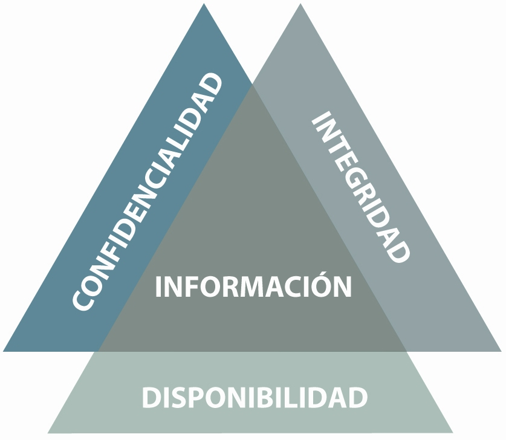

OBJETIVOS
Objetivo General
Reconocer el significado de Seguridad Informática y las diversas amenazas que se presentan en la web para los equipos informáticos, además de la correcta instalación de antivirus en sus equipos para protección su protección.
Objetivo específico 1:
Identificar el objetivo de la seguridad informática y para que está concebida.
Objetivo específico 2:
Conocer los tipos de virus que se presentan en la web y cuáles son sus efectos en una PC.
Objetivo específico 3:
Realizar la instalación de un antivirus en el PC.

La seguridad informática debe establecer normas que minimicen los riesgos a la información o infraestructura informática.
Estas normas incluyen horarios de funcionamiento, restricciones a ciertos lugares, autorizaciones, denegaciones, perfiles de usuario, planes de emergencia, protocolos y todo lo necesario que permita un buen nivel de seguridad informática minimizando el impacto en el desempeño de los trabajadores y de la organización en general y como principal contribuyente al uso de programas realizados por programadores.
Para que esta concebida la Seguridad Informática
La seguridad informática está concebida para proteger los activos informáticos, entre los que se encuentran los siguientes:
• La infraestructura computacional:
es una parte fundamental para el almacenamiento y gestión de la información, así como para el funcionamiento mismo de la organización. La función de la seguridad informática en esta área es velar por que los equipos funcionen adecuadamente y anticiparse en caso de fallos, robos, incendios, sabotajes, desastres naturales, fallos en el suministro eléctrico y cualquier otro factor que atente contra la infraestructura informática.
• Los usuarios:
Son las personas que utilizan la estructura tecnológica, zona de comunicaciones y que gestionan la información. Debe protegerse el sistema en general para que el uso por parte de ellos no pueda poner en entredicho la seguridad de la información y tampoco que la información que manejan o almacenan sea vulnerable.
• La información:
Esta es el principal activo. Utiliza y reside en la infraestructura computacional y es utilizada por los usuarios.
WIKIPEDIA, La Enciclopedia Libre. (2019, 24 julio). Seguridad Informática. Recuperado 24 septiembre, 2019, de:
https://es.wikipedia.org/wiki/ Seguridad_informáticaALGUNOS VIDEOS QUE AYUDAN A PROFUNDIZAR EL TEMA:
Zambrano, M. Z. Melanie. (2017, 30 septiembre). Objetivos de la seguridad informática | by: M&N® [Video de YouTube]. Recuperado 24 septiembre, 2019
Quiroga, N. Q. Neider. (2017, 28 septiembre). Objetivos de la Seguridad Informática [Video de YouTube]. Recuperado 24 septiembre, 2019
Roman, O. R. Oscar. (2015, 5 octubre). Seguridad informática Parte 2 [Video de YouTube]. Recuperado 24 septiembre, 2019